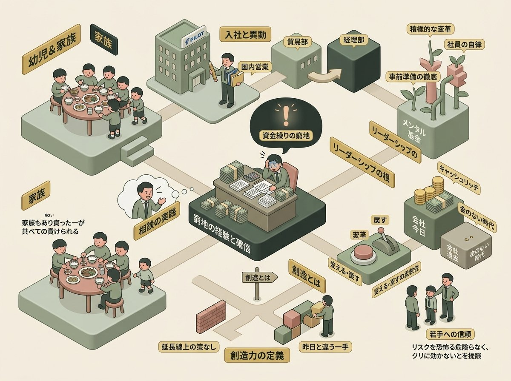
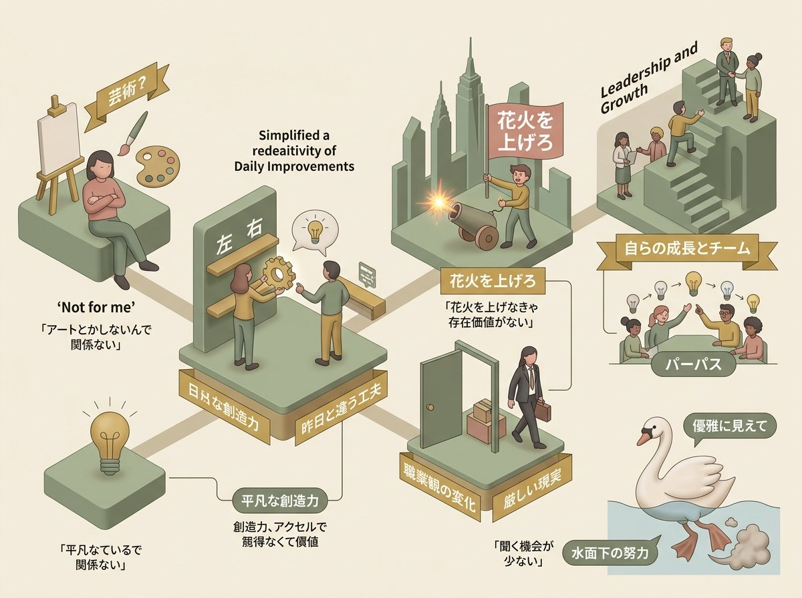
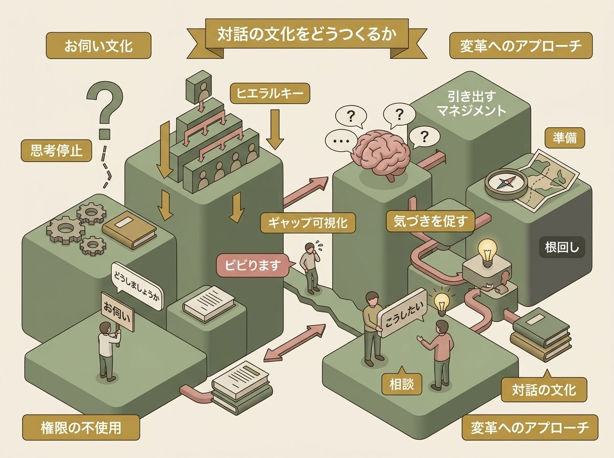

2026年4月3日、株式会社パイロットコーポレーション本社にて、藤崎照幸社長へのインタビューが行われた。来月に控える部課長向けワークショップに先立ち、パーパス「人と創造力をつなぐ」を、一人の人間としてどう生きてきたのかと合わせて語ってもらう——それが今回の趣旨である。
インタビューの冒頭、藤崎は「硬く話せって言われたら無理だと思います」と笑った。その言葉通り、約40分にわたる対話は、資金繰りに追われた26歳の経理時代から、アメリカ駐在での職業観の転換、そして社長として今も水面下で足をバタバタさせている今に至るまで、率直に、時に自嘲を交えながら展開された。
同席したPILOT社員たちのリアクションもまた、このインタビューに奥行きを与えている。「ビビります」という正直な告白、「もっと社員から社長に近づいていきたい」という願い——それらは、藤崎が語る理想と現実の間にある、生きた距離感を映し出していた。
本ドキュメントは、そのインタビューを再構成したショートバージョンである。時系列ではなく意味のまとまりに沿って章を立て、藤崎の言葉を中心に据えた。社長の「薄っぺらなもんしかないですけどね」という謙遜の奥にある、厚みのある思想の萌芽を、ここに記録する。

藤崎は5人兄弟の末っ子として育った。「意外と引っ込み思案だったんじゃないかな」と自身を振り返る。その原風景——狭い家の丸テーブルで、皿の上のおかずを兄弟5人で争い、いつも負けていた末っ子の記憶——は、限られた資源の中で生きる感覚として、後のキャリアと共鳴している。
入社の動機は筆記具への愛着ではなかった。父親が小さな工場を営んでいたことからメーカー志望となり、就職解禁日の翌日にたまたまパイロットを受けた。国内営業、貿易部と毎年のように異動し、経理部へ。そこで最も決定的な転換点が訪れた。
藤崎
「今はうちの会社は大変キャッシュリッチな会社になってますけども、昔は私が経理の頃は、本当に金がない会社で、日々お金を工面していくようなところだったんで……これ、もしかしたら会社潰れるのかもしれないみたいな。そういう体験はしましたね」
まだ26歳前後の若者が、会社の資金繰りの現場にいた。「会社が潰れるのかもしれない」。この体験が、今も「いろんな思考のベースの中に入って残っている」と藤崎は語る。現在のリーダーシップ——変えることへの積極性、事前準備への執着、社員への「自律」の要求——すべての根にこの体験がある。
その窮地を乗り越えた方法は、シンプルだった。
藤崎
「自分で解決できないことは、そんな若造が解決できることなんて大したことないと思うので、相談をしたんだと思います。じゃないと耐えられなかったんだと思います」
「じゃないと耐えられなかった」。この率直さは、後に語られる「お伺いではなく相談を」というマネジメントスタイルの原点を見せている。自分がかつて救われた「相談」という行為を、今度は受け止める側として実践しているのだ。当時、すぐ隣にいた海外帰りの上司は「ちょっと日本人とは違った」と藤崎は言う。異質な価値観との最初の出会いが、ここにあった。
窮地の経験から、藤崎の中に一つの確信が生まれた。それが「創造力」の定義に直結する。
藤崎
「大変厳しい場面に立ち向かった時、今のままではいけないなというような感覚がやっぱ身についたんだと思います。今の延長線上にその解決策はないというふうなことを感じて、昨日と違うことをやっていかなきゃいけないみたいな、常に新しいものを作っていくっていうのは、私にとってやっぱ創造することだろうと思います」
「今の延長線上にその解決策はない」。パーパス「人と創造力をつなぐ」に対する藤崎個人の解釈として、これほど実践的な言葉はない。芸術的な意味での創造ではない。日々の仕事の中で、昨日とは違う一手を打つこと。その積み重ねが「創造」なのだと。26歳の資金繰りの窮地が、この確信を育てた。
変えることへの恐れについて問われた藤崎は、明快だった。「変えてみて問題あったら戻しゃいいぐらいのつもりでいいんじゃないかな」。リスクへの冷静な認識と、変化を恐れない胆力が同居している。若い社員に対してはさらに踏み込み、「若いうちでできることって会社の潰れる潰れないにつながらない」と語った。
ポストトラウマティック・グロース（Post-Traumatic Growth）
心理学者テデスキとカルホーンが提唱した概念。トラウマ的な出来事の後に、個人がそれ以前よりも高い心理的機能を獲得する現象を指す。藤崎が語る26歳の体験は、まさにこのグロースの契機として機能しており、「今もその苦労が思考のベースに残っている」という言葉は、窮地が現在のリーダーシップの資源に変換されていることを示している。

窮地から生まれた「変える」感覚。だがその創造力は、特別なものである必要はない。
藤崎
「それは小さなことでも良くて、今まで左に置いてあったものを右に置いておくともっと効率的になるとか、そんなんでも全然良くて、でも昨日よりなんか違う工夫みたいなことも、私にとっては創造かなというふうに思ってます」
左に置いてあったものを右に置く。この比喩の平易さが重要だ。「創造力」という言葉に対して「アートとかしないんで関係ない」と感じてしまう社員に向けて、藤崎は意図的にハードルを下げている。特別な才能や芸術的センスは必要ない。日常業務の中で「昨日とは違うやり方」を試みるだけでよい。この定義は、創造力を「特別な人の特別な能力」から解放し、すべての社員が実践可能なものへと開くものだ。
そして30歳のアメリカ駐在が、この変化をさらに加速させた。
藤崎
「アメリカの現地の社員はパフォーマンスを求められる。もう朝、今日で終わりって言われたら、もう午後にはいない……『うわ、まずいよな、これじゃ』と思って、一年に1回は花火を上げなきゃまずいな、存在価値がない、私の。と思って何かをやっぱりまたそこでやろうというようなことになりました」
「花火を上げなきゃ存在価値がない」。日常的な工夫を超えて、自分の存在そのものを証明する必要に迫られた。日本からの駐在員だから同じ目には遭わない。だがアメリカの社員がパフォーマンス不足で朝に通告され午後にはいなくなる——その現実を目の当たりにして、藤崎の中に切実な問いが生まれた。
藤崎はこの体験を振り返り、「職業観がそこで変わったのかもしれないですね」と静かに語った。
藤崎
「やっぱり違う価値観みたいなものとぶつかった時に新しいものを生み出す知恵みたいなのが出てくるのかなという気がしますけどね。……人間が持ってる能力って無限だと思ってるんで、ただそれを出すか出さないか、それは個人の気持ちとか思いとか、そういう使わなきゃいけないっていう場面に出会ったか出会わないかみたいなところになるのかな」
「人間が持ってる能力って無限」。大きな言葉だが、藤崎がこれを語る文脈は抽象的な理想論ではない。窮地やアメリカでの衝撃という具体的な体験に裏打ちされている。能力は出すか出さないか——その分岐点に「使わなきゃいけない場面」との出会いがあるという認識は、後に語られる「お伺い文化」への問題意識とも地続きだ。
日常的創造性（Everyday Creativity / mini-c）
カウフマンとベゲットは創造性を4段階に分類した——mini-c（個人的な洞察）、little-c（日常的な創造性）、Pro-C（専門家レベル）、Big-C（歴史的業績）。藤崎が語る「左に置いてあったものを右に」はlittle-cの典型例だ。パーパス浸透の最大のハードルが「創造力って自分には関係ない」という認識だとすれば、藤崎のこの語り口はそのハードルを正面から取り除くものである。
存在証明としての創造（Existential Creativity）
サルトルの実存主義では、人間は自らの行為によって自己を定義する。藤崎の「花火を上げなきゃ存在価値がない」は、この実存的な問いと重なる。26歳の資金繰りの経験がなければ、アメリカで同じ風景を見ても「花火を上げなきゃ」とは思わなかったかもしれない。二つの窮地が重なり合って、藤崎の職業観を根底から書き換えた。
丸2年の社長経験を振り返り、藤崎は「やっぱり社長とその前は全然違うな」「自分自身をさらに変えていかなきゃいけない、成長させていかなきゃいけない」と語った。会社を前に引っ張っていく役割がある。だが一人ではできない。社員一人一人の努力が伴わなければならない。チームとして動く——その方向性を揃えるのがパーパスの役割だ。
自らの成長のために、藤崎は外に学びに出向く。他社の社長と会い、そこから社員同士の交流の場を設定することもある。だが、その努力は社内からは見えにくい。PILOT社員の言葉が、それを照らし出した。
PILOT社員
「藤崎さんご自身がそういう努力をされているっていうのは、実はあんまり我々も聞く機会が少ないので」
藤崎
「そうだね、水の中で一生懸命足をバタバタさせてるんで」
水面下のバタ足。白鳥が優雅に泳いでいるように見えて、水面下では必死に足を動かしている——その古典的な比喩を、藤崎は自嘲を込めて自然に使った。社長の努力は見えにくい。だがそれは確かにある。社員目線で「聞く機会が少ない」と率直に語られたことで、この対話そのものが、社長と社員の距離を縮める一つの機会になっていた。
心理的安全性と変化への許容（Psychological Safety）
エドモンドソンが提唱した概念。失敗しても罰せられないという信頼が、イノベーションの土壌となる。藤崎は「変えてみて問題あったら戻しゃいい」とトップ自ら安全性を言語化する一方で、「オープンドアって言っても来ないだろうな。私だったら行かない」とその理想と現実のギャップも自覚している。5階の役員席という物理的な距離が象徴するように、安全性の「宣言」と「実感」の間をどう縮めるかが、パーパス浸透の核心的な課題だ。

藤崎が最も力を込めて語ったテーマの一つが、「お伺い文化」の問題だった。
藤崎
「ヒエラルキーの中で相談とお伺いは違うんだと思ってるんですよ。うちはお伺い文化がまだある。どうしましょうか。でもそれはあなたの権限で決められるなら、あなたが決めなさいと私は言うようにしてるんですけども」
「どうしましょうか」はお伺い。「こうしたい」は相談。この区別は単なる言い回しの問題ではない。
藤崎
「お伺いをするって考えないってことですから。やっぱり私はこう考える、こうしたいとか、そういう言い方をしてもらいたいですよね。こうすべきだと思うとかね」
「お伺いをするって考えないってことですから」。この一言は厳しい。だがその厳しさは、社員の能力を信じているからこそのものだ。「人間が持ってる能力って無限」と語った藤崎にとって、考えずに答えを求める行為は、その無限の能力を自ら放棄していることに他ならない。
PILOT社員が率直に応じた。
PILOT社員
「持っていく時にはお伺いではなくてこうしたいです、で相談させていただくような風には気をつけてはいますけど、そういう風に捉えていただいているかどうかちょっとわからない」
インタビュアー
「でも、ビビりますよね」
PILOT社員
「ビビります」
この「ビビります」の一言が、場の空気を和らげた。藤崎の理想と、現場の実感の間にある距離が、一言で可視化された瞬間だった。
藤崎はそのギャップを埋めるために、ある工夫をしている。
藤崎
「だから私は質問で極力対応するようにはしてるんですけどね。何のためにこれをやるんだが、これをやることが目的化してくる恐れがあって……それはやっぱ質問で、そういうことに気づいてもらいたいなというふうに思って質問してますけどね」
質問という形で、答えを与えるのではなく気づきを促す。それは「教える」ではなく「引き出す」マネジメントだ。だが、その質問が時に怖く感じられることも理解している。
藤崎
「だから、笑顔を添えて。もっと怖いか（笑）」
この自嘲が、藤崎の人柄を如実に表している。変えることへの反発は必ずあると藤崎は知っている。だが「根回し」ではなく「準備」だと彼は言う——反対されることを前提に、それでも前に進むための手を打つ行為。その準備があるから、変えるという行動に踏み出せるのだと。
藤崎
「社長は役割で、部長も役割なんですよ。課長も役割なんだけど、そこにヒエラルキーみたいな上下関係みたいなのができちゃう中で社長に飛び越えていくのは躊躇するんだと思うんですよね。でもそれは役割なんで、直接全然問題ないと思います」
「役割」であるはずのものが「ヒエラルキー」として機能してしまう。この構造的な問題を藤崎は理解しつつ、個人の勇気にも期待している。その両義性が、リーダーとしての誠実さであると同時に、組織変革の難しさでもある。
お伺い文化（Seeking Permission Culture）
エドガー・H・シャインの組織文化論では、暗黙の行動パターンを「基本的仮定」と呼ぶ。「どうしましょうか」の裏にあるのは「判断の責任を取りたくない」という仮定かもしれないし、「上位者の意向確認が礼儀」という仮定かもしれない。藤崎がこの文化を変えようとする時、それは単なる行動変容ではなく、組織の深層にある仮定そのものへの挑戦を意味している。
ソクラテス的問答法（Socratic Method）
直接的に知識を伝授するのではなく、問いを重ねることで相手自身に答えを発見させる手法。現代のコーチング理論でも「パワフルクエスチョン」として中核に位置づけられている。ただし質問が機能するには「安全な関係性」が前提となる。藤崎の「笑顔を添えて。もっと怖いか」は、その前提条件の不完全さを自覚した上でのユーモアだ。
インタビューの終盤、藤崎は未来を語った。筆記具で稼ぎ、未来の社員に投資する。コア事業の筆記具そのものにもイノベーションを起こす。そしてAIが台頭する時代における「書く」という行為の本質に話が及んだ。
藤崎
「書くということは太古の時代からあって、歌うこと、踊ることと一緒だって。確かにそうなんだろうなと思って」
書くこと、歌うこと、踊ること——太古から続く人間の根源的な営みとして筆記具という事業を位置づけ直す。五感に感じる、人間らしい行為。AIが文章を生成する時代にあって、「手で書く」という行為にこそ新たな価値が宿る。
PILOT社員たちの声が、この対話の最後を彩った。「社長に近づきたいと思う社員を増やしていきたい」——5階のオープンドアの向こうにある距離を、組織の側から埋めていこうという意思表明だった。
そして藤崎は、最後のメッセージとしてこう結んだ。
藤崎
「やっぱり社員があるからこの会社をより良くできるんだろうと思ってるんで。だからやっぱり最近使ってる言葉、やっぱり情熱だと思いますよ。自律、挑戦、協働、プラス情熱」
藤崎
「創造力もやっぱ解放しなきゃいけないし、まだくすぶってる情熱も本当に燃やせてもらいたいと思いますよね」
「創造力の解放」「くすぶってる情熱を燃やせ」。
このインタビューを通じて浮かび上がったのは、創造力とは特別な才能ではなく、「このままではいけない」という感覚から始まる日常的な変化の連鎖であるという、藤崎の一貫した信念だった。資金繰りに追われた経理の日々、アメリカで「花火を上げなきゃ」と焦った30歳の夏、水面下で足をバタバタさせながら外に学びに出向く今。その軌跡は、決して華やかなサクセスストーリーではない。だがそこにこそ、「人と創造力をつなぐ」というパーパスの、最も地に足のついた解釈がある。抽象を具体に、組織の言葉を個人の言葉に変換する——藤崎がこのインタビューで行ったのは、まさにその営みだった。
情熱（Passion）
組織行動学では「ハーモニアス・パッション」（自律的で健全な情熱）と「オブセッシブ・パッション」（強迫的な情熱）の二類型で研究されている（ヴァレラン、2003）。藤崎が求める情熱は前者に近い。「まだ全部出してないだろう」「くすぶってる」という表現は、社員の中にすでに情熱があることを前提としている。問題は情熱の有無ではなく、それが「解放」されていないことだ。解放を阻んでいるのは何か——お伺い文化か、5階の距離か。その問いは、このインタビューでは閉じられていない。開かれたままだ。
くすぶってる情熱を、燃やしてほしい。
その言葉の重みは、約40年のキャリアの全体が支えている。